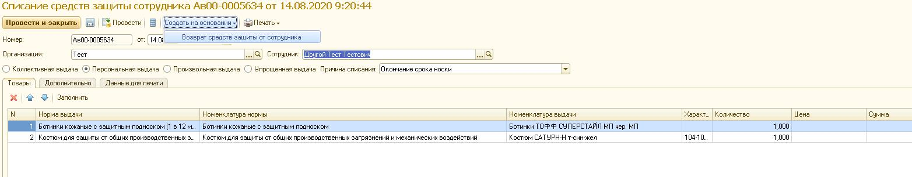

Существуют два поля, которые влияют на заполнение ТЧ по сотруднику.
1. Вид выдачи. Тут всё понятно – выпадает только та номенклатура, которая выдаётся по нормам с определённым видом выдачи.
2. Причина списания. Тут каждый статус имеет свою особенность.
2.1. Износ, брак – ТЧ заполняется по нормам с видом расчёта период. И только по последним выданным. Исключением служат нормы, количество которых превышает единицу. То есть, если по таким нормам выдача производилась частично, (например: мыло 5 в 1 месяц и выдали 3, потом 2) то в табличную часть попадут несколько строк из выдач (две строки с кол-вом 3 и 2). Для данных статусов появляется дополнительное поле «Уточнённая причина списания». Служит она для вывода в ПФ дополнительной информации, притом конкретно по каждой номенклатуре. При этом, стоит заметить, что «Уточнённую причину списания» можно добавить только, встав мышкой на конкретную позицию. При выборе причины, открывается форма из справочника «Уточнённые причины списания».
2.2. Порча, пропажа – также заполняется по всем нормам с видом расчёта «Период». Для ДСИЗ не сработает! (То есть, для номенклатур выдачи, у которых в соответствии номенклатуры выдачи указана номенклатура, в которой вид СИЗ имеет признак дерматологический. см скрин ниже) И только по последним выданным. Исключая частичную выдачу.(см. пример в пункте 2.1)
2.3. Увольнение, Тех. списание – выводят вообще всё что когда-нибудь выдавалось сотруднику и ещё не списано.
2.4. Окончание срока носки – выводит только те СИЗы, у которых срок носки закончился. То есть, простая формула/условие. «Дата выдачи» + «Периодичность выдачи» <«Текущая дата».
2.5. Отмена норм – строки заполняются только теми позициями, по которым выключили нормы и провели «Приказ по нормам выдачи» на отключение.
На основе данного документа «Списание СИЗ сотрудника» можно создать документ «Возврат средств защиты от сотрудника».

Данный документ предназначен для приходования остатков на определённый склад, который указывается в поле «Склад».
Табличная часть документа возврата, заполняется на основании подчинённого документа «Списания СИЗ».
Также и документа имеется возможность выводить печатные формы документов.
- Приложение к оборотной стороне ЛК. Данная печатная форма несёт в себе информацию о данных сотрудника, по которому делается списание, о документах выдачи и возврате
- Форма МБ-8 - акт на списание малоценных и быстроизнашивающихся предметов.